Version 1.3.1 · translated article
Building first-person control for an Arduino robot
The screenshots are from the original article and show the app's Russian interface; the text describes each screen in English.
The latest version of RoboCam can control not only EV3 robots but also robots built on platforms such as Arduino, Raspberry Pi and similar, where you can work directly with the data received and sent over Bluetooth. Now you can process RoboCam's commands however you like.
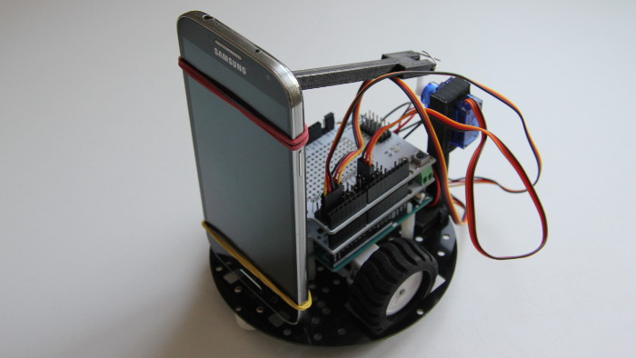
This article describes the new features in RoboCam version 1.3.1. All the articles about RoboCam can be found here. You can install RoboCam from Google Play, or from the APKPure mirror if you want an APK to install manually.
Everything done for the EV3 in the previous versions is unchanged. The new version only adds a driver and settings for working with robots that can receive commands from RoboCam directly over Bluetooth, process them and send replies. Such robots can be built on various platforms (Arduino, Raspberry Pi, PC) and run various firmware and operating systems (standard Arduino firmware, Windows, Linux, Android and so on). The program that talks to RoboCam can also be written in various programming languages.
Since the robot's firmware or operating system can vary, below I describe only the protocol for talking to RoboCam and the new settings, and give an example program for controlling a wheeled robot with a controllable smartphone holder on the Arduino platform.
The robots described above will be called non-standard robots in this article and in the settings.
Here is a video in which an Arduino robot is controlled in first person with RoboCam. Further down the article describes how, and with what, to build such a robot.
How RoboCam and the robot communicate
The first thing to do for RoboCam and the robot to start communicating is to connect to the Bluetooth module in software and wait until data starts arriving from it. This is done differently on every system and can't be covered in one article. So I will give examples only for the Arduino platform, and specifically for an Arduino Uno + HC-06 Bluetooth module configuration. I assume the HC-06 has its default settings (9600 baud) and is connected the standard way (the module's RX pin to the Arduino Uno's TX pin, and the module's TX pin to the Arduino Uno's RX pin). With the standard connection, all Bluetooth work on the Arduino goes through the serial port at 9600. In code, initialising the port looks like this:
As you can see, it's simple. After that you can read and send data over Bluetooth. On the Arduino this is done with the methods of the Serial class, such as read(), write(), available() and others.
Once the RoboCam app connects to your program, it immediately takes the initiative: RoboCam sends messages with commands, and your program processes those commands and sends messages with replies back. All commands and replies go in sequence: first a command message arrives from RoboCam, then a reply message must go back, after which RoboCam sends the next command, which again must be answered, and so on.
Your program should answer each command message as fast as it can. The longer your program takes to reply, the worse your robot's response to the user's actions will ultimately be.
A reply to each message is expected within one second. RoboCam treats a reply delayed by more than a second as an error.
Each message is a certain set of bytes. The first two bytes contain a number giving the size of the message in bytes. These first two bytes are not counted as part of the message. So if the first two bytes say 5, then 5 more bytes follow, and those are the message itself. So a message is read like this: first you read the first 2 bytes and convert them to an unsigned two-byte integer, then you read as many more bytes as that number says. Here is an example of reading the message size on an Arduino:
After that you can read the whole message into an array, for example like this:
In the example above the loop is exited if there is no data available to read in the serial port. That is, we don't wait for the message to be read in full. With this approach we read the message as data arrives and do something else in parallel in the endless loop of our Arduino sketch, in the loop() function.
Once the message has been read (in the example above that happens when the value of readMessageBytes becomes equal to the value of messageSize) it can be parsed, and after parsing and sending the reply you read the next message, and so on.
A reply message is sent like this: first you build the message, for example by putting it in a byte array, then you calculate the size of the resulting message and send it as the first two bytes, followed by the message itself, i.e. the prepared byte array. An example of sending a reply message on an Arduino looks like this:
Message contents
Once your program has read a message into an array, the message can be read. The first byte of the message holds the command code. All the other bytes depend on the command. The commands are:
-
-
-
- 0 – the «Start» command;
- 1 – the «Callsign» command;
- 2 – the «Controllers» command;
- 3 – the «Test» command;
- 255 – the «Stop» command.
-
-
For convenience it is best to declare constants for the commands right away in your program (further on in the article I use the names of these constants for convenience):
The robot must answer every command it receives. As written above, the reply is also a message. The first byte of the message (of course after the two bytes with the message size) is the result code. Whether more bytes follow, and what they contain, depends on the command being answered.
The result byte can take only two values:
-
-
-
- 0 – the command was executed successfully;
- 1 – an error occurred while executing the command, or the command is not supported.
-
-
Now let's look at the commands and their replies in more detail.
The «Start» command (CMD_START)
This command starts the conversation between the robot and RoboCam (it happens after you press the middle purple button in RoboCam and choose a robot from the list). In reply to this command the robot must return a correct reply. If RoboCam gets a wrong reply to this command, or no reply within a second, RoboCam breaks the connection and reports an error.
So here are the bytes that arrive in a message with the CMD_START command:
SSCTV
Here one letter stands for one byte:
-
-
-
- The first two bytes SS are the size of the message, i.e. the number of bytes that follow these two bytes in the message.
- Then comes the byte C containing the command code. In our case it is 0, i.e. the CMD_START command.
- The next byte T is a check byte. Its value is different each time, in the range 0 to 254. What to do with this value is written a little further down.
- At the very end comes the byte V with the number of the highest version of the communication protocol that RoboCam supports. At the moment that is 1.
-
-
Here is an example of a message with the CMD_START command in octal:
030000D101
On receiving this command your robot must reply within 1 second. The reply is also a byte array and must look like this:
SSRTVC
Here too I have marked one byte with one letter. This is what is transmitted in the bytes:
-
-
-
- The first two bytes SS are the size of the message. The reply is also a message, so here too the first two bytes contain the size of the array that follows these two bytes.
- The next byte R is the result type. 0 – the robot executed the command successfully, 1 – error. If you put 1 here (i.e. an error), the remaining bytes of the message need not be sent.
- The byte T is the reply to the check byte. It must hold a number 1 greater than the one you received with the CMD_START command. In the example above the number D1 (209 in decimal) is given, so in reply you must send the number D2 (210).
- The next byte V is the version of the communication protocol the robot will use. The version number here must not be higher than the version you received with the CMD_START command, otherwise RoboCam refuses to work with the robot and reports an error. At the moment you should put 1 here.
- The last byte C is the encoding in which strings will be transmitted. There are only two options: 0 – US-ASCII (no Russian letters) and 1 – UTF-8. US-ASCII is what the Arduino uses.
-
-
Here is an example of a reply to the CMD_START command:
040000D20100
The «Callsign» command (CMD_CALLSIGN)
After RoboCam gets an error-free reply to the CMD_START command, with the check byte, protocol version number and encoding all correctly given, further communication between the robot and RoboCam begins. Right after that the robot receives the CMD_CALLSIGN command. This only happens, though, if a callsign and a reply to it are set in the RoboCam settings. If no callsign or reply is set, this command is not sent. In the picture below, for example, the callsign «RoboCam» and the reply «Researcher» are set in the settings.
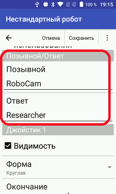
A message with the CMD_CALLSIGN command looks like this:
SSCAAA…0
-
-
-
- The first two bytes SS contain the size of the message, as for the other commands.
- The next byte C is the command code. For the CMD_CALLSIGN command it is 1.
- The remaining bytes AAA…0 are a string terminated with 0, containing the callsign you set in the settings. The string's encoding matches the one you gave in your reply to the CMD_START command.
-
-
An example of a CMD_CALLSIGN command with the callsign «RoboCam» in US-ASCII encoding looks like this:
090001526F626F43616D00
In reply to this command you must send the string with the reply to the callsign that is set in the RoboCam settings. If any other string comes back, RoboCam breaks the connection. The reply message looks like this:
SSRAAA…0
-
-
-
- The first two bytes SS are, as for the other replies, the size of the message.
- The next byte R is the result type: 0 – callsign accepted, 1 – error. If you return 1 here, the remaining bytes of the message need not be sent.
- The remaining bytes AAA…0 are a string terminated with 0, containing the reply to the callsign. The string's encoding matches the one you gave in your reply to the CMD_START command.
-
-
An example with the reply «Researcher» to the callsign looks like this:
0C00005265736561726368657200
The «Controllers» command (CMD_CTRL)
After RoboCam has connected to your program, and after the CMD_START and CMD_CALLSIGN commands, CMD_CTRL commands start arriving. These are commands from the controllers the user drives the robot with, i.e. the joysticks and the keyboard. Commands arrive every time the coordinate of the point where the user's finger touches a joystick changes, or a key's status (pressed/not pressed) changes, i.e. when the user is driving the robot. Commands arrive only if the coordinates have changed or a key on the keyboard has been pressed or released.
A message with the CMD_CTRL command looks like this:
SSCJVJVJV…
-
-
-
- The first two bytes SS are the size of the message.
- The byte C is the command. For the CMD_CTRL command it is 2.
- The following bytes JVJVJV… are information about changes in the state of the controllers. There can be one or more pairs of bytes. This is what the bytes in a pair mean:
- The byte J is the controller identifier. These are the values this byte can take and what they mean:
- 0 – the X axis (horizontal axis of joystick 1);
- 1 – the Y axis (vertical axis of joystick 1);
- 2 – the W axis (horizontal axis of joystick 2);
- 3 – the Z axis (vertical axis of joystick 2);
- 4 – the A axis (horizontal axis of joystick 3);
- 5 – the B axis (vertical axis of joystick 3);
- 6 – the C axis (horizontal axis of joystick 4);
- 7 – the D axis (vertical axis of joystick 4);
- 255 – a key pressed;
- 254 – a key not pressed.
- The byte V takes a value depending on the byte J:
- For a joystick axis (if J is from 0 to 7) the byte V holds the coordinate of the point where the user touches the joystick, in the range -100 to 100.
- For a key (if J is 255 or 254) it is the key code. For the possible key codes see the table at the end of the article «RoboCam – controlling a robot in first person from a computer keyboard».
- The byte J is the controller identifier. These are the values this byte can take and what they mean:
-
-
An example of a CMD_CTRL command (the command means that the X axis coordinate took the value 90, the Y axis the value -100, and the key with code 89, i.e. the Y key, was pressed):
060002005A019CFF59
For convenience it is best to define constants for the controller identifiers in your code right away:
When your program receives a CMD_CTRL command you immediately learn what has happened with the joysticks and keys. You can then change the robot's direction of travel straight away, turn a servo to the required angle, and so on. After processing the command you must send a reply; these are the bytes:
SSR
-
-
-
- SS is the size of the message. It is always 1 here, because the reply is always a single byte.
- R is the result: 0 – no error, 1 – error. In fact the CMD_CTRL command ignores the result but still waits for a reply message. Even so, it is recommended to always return 0 here.
-
-
The reply will look like this:
010000
The «Test» command (CMD_TEST)
The CMD_TEST command is sent about once a second, to check the connection. If the robot does not answer this command, RoboCam considers the link with the robot lost. This is what a message with the CMD_TEST command looks like:
SSC
-
-
-
- The bytes SS are the size of the message. For the CMD_TEST command the size is always 1.
- The byte C is the command code, in this case 3.
-
-
Here is an example of a message with the CMD_TEST command:
010003
You must answer the CMD_TEST command within 1 second, otherwise RoboCam considers the link with the robot lost. The reply format must be as follows:
SSR
-
-
-
- The bytes SS are the size of the message.
- The byte R is the result: 0 – command processed successfully, 1 – error. If you return 1 here, RoboCam considers the connection broken.
-
-
Here is an example of a reply to the CMD_TEST command:
010000
The «Stop» command (CMD_STOP)
The CMD_STOP command is sent to the robot when the robot needs to be stopped and returned to its initial position. It is sent if the connection between the smartphone with the joysticks and RoboCam is lost, or if you break the connection by pressing the middle purple button in RoboCam. On this command the robot must stop moving and return its servo motors to the initial position. The command format is as follows:
SSC
-
-
-
- The bytes SS are the size of the message. For the CMD_STOP command the size is always 1.
- The byte C is the command code, in this case 255.
-
-
Here is an example of a message with the CMD_STOP command:
0100FF
The reply expected to this command is as follows:
SSR
-
-
-
- The bytes SS are the size of the message.
- The byte R is the result: 0 – command processed successfully, 1 – error. The result of the reply to this command is ignored but expected. It is recommended to always return 0 here.
-
-
Here is an example of a reply to the CMD_STOP command:
010000
Robot settings
Now that we have dealt with the communication protocol, we can look at the settings that have appeared for non-standard robots. In RoboCam open the settings (the grey round button on the right),
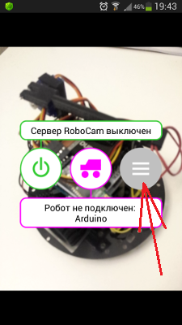
then choose «Robot».
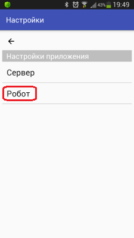
The robot settings open. As you can see, the list now shows both settings for EV3 robots and for non-standard robots.
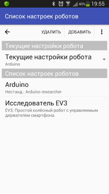
To change settings you created earlier, simply choose them from the list; to add new settings for a non-standard robot, press the «Add» button and choose the menu item «Non-standard robot».
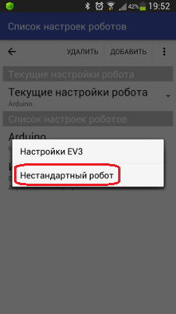
If you decide to create new settings, you get an empty settings screen.
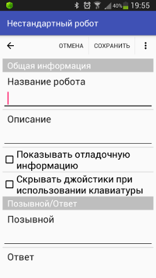
In the article I will describe the settings using, as an example, settings I created earlier for controlling the robot you saw in the video at the top of the article. At the very start the robot's name is given; it will be visible in the list of settings and on RoboCam's main screen if the settings are the current ones. Next comes a description, which is visible only in the list of settings.
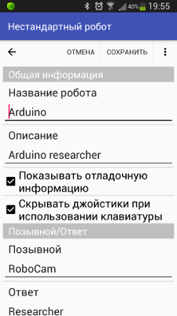
If «Show debug information» is ticked, the client shows the joystick coordinates while a joystick is in use, and the codes of the keys pressed.
If «Hide joysticks when using the keyboard» is ticked, then, as with the EV3 settings, the joysticks on the client disappear as soon as any key is pressed on the client. As soon as you click the screen with the mouse, the joysticks appear again.
Next come the callsign and reply settings. The text given here is used for the CMD_CALLSIGN command described above.
Below are the settings for RoboCam's 4 joysticks. The settings are the same for all joysticks, so let's look at them using the first joystick as an example. The first checkbox, «Visibility», controls the joystick's visibility; if it is unticked, the joystick is not shown on the client and does not work.
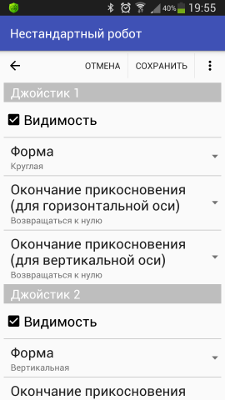
From the «Shape» list you can choose the joystick's shape. The shapes are: vertical, horizontal, round, square, arrows, vertical arrows and horizontal arrows. This is what joysticks of the described shapes look like:

How the joysticks work depends on the shape and is already described in the article «Controlling a LEGO Mindstorms EV3 robot in first person».
The next two lists choose how the joysticks behave when you stop touching them. There are only two options: «Return to zero» and «Keep position». In the first case, if you «let go» of the joystick it returns to its initial state, i.e. to zero; in the second it stays where it is. The behaviour can be set separately for the joystick's vertical axis and horizontal axis.
At the very bottom the keys are configured. The «Active» checkbox turns RoboCam's client sensitivity to key presses on or off. If you don't plan to use the keyboard for control, it is recommended to untick it to save battery on the client device.
A little lower, if you press the «Keys» setting, you can choose the keys whose state you intend to track.
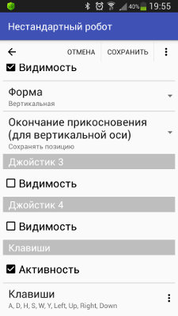
All in all there are far fewer settings for a non-standard robot than for an EV3 robot, but the ones there are work like the EV3 robot's, so read the earlier articles about RoboCam for more detail.
Building the Arduino robot
To make the Arduino robot controlled in first person with RoboCam, which you can see in the video below, I used the Amperka educational kit plus additional components and parts: an HC-06 Bluetooth module, extra plastic standoffs, nuts and washers, two parts 3D-printed to hold the servo motor, a paper clip and two rubber bands (the kind used for banknotes).
The assembly process is shown in fast-forward in the video. There is nothing complicated about it. If you build a robot like this from the Amperka educational kit, it comes with a book describing how to connect the motors and how to build a line-following robot. My robot is the same as the one in this book, but without the line sensors.
I decided to fix the smartphone in the simplest way: two standoffs with screws are screwed on at the bottom, and the smartphone is held to them with a rubber band. At the top the smartphone is held to a rail, again attached with a rubber band. The other end of the rail is attached to a servo. The video shows the smartphone tilting through small angles, but by lengthening the lever you can increase the tilt angles if you wish.
The ready-made 3D-print models of the servo holder and the rail are listed below:
| Servo holder (3D model) | |
Servo holder (3D model) for a robot built from the Amperka educational kit. 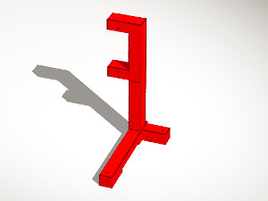 |
|
| 06.10.2017 76.41 KB 2615 |
| Rail (3D model) | |
Rail (3D model) for a robot built from the Amperka educational kit. 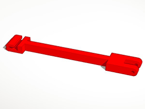 |
|
| 06.10.2017 56.08 KB 2211 |
If your robot platform is different, your smartphone holder will be different too. In that case, if you can 3D-print, making your own holder is no problem. I created my own 3D models of the servo holder and the rail in the cloud 3D editor Tinkercad. I have already described how to work with it in the article «Tinkercad – a simple web tool for 3D design and 3D printing» (Russian).
To repeat my experiment you will also need the Arduino sketch and the RoboCam settings:
| Arduino Explorer Version: from 10.09.2017 | |
A sketch for controlling a wheeled Arduino robot with a controllable smartphone holder using RoboCam. |
|
| 10.09.2017 15.07 KB 2738 |
| RoboCam settings for controlling the Arduino Explorer Version: from 10.09.2017 | |
RoboCam settings for controlling the Arduino Explorer. |
|
| 11.09.2017 448 B 2659 |
All RoboCam versions
- v1.4.2 Turning a smartphone into a robot remote control with RoboCam
- v1.3.1 Building first-person control for an Arduino robotyou are here
- v1.2 RoboCam – controlling a robot in first person from a computer keyboard
- v1.1 Importing, exporting, copying and sending robot settings in RoboCam
- v1.0 Controlling a LEGO Mindstorms EV3 robot in first person